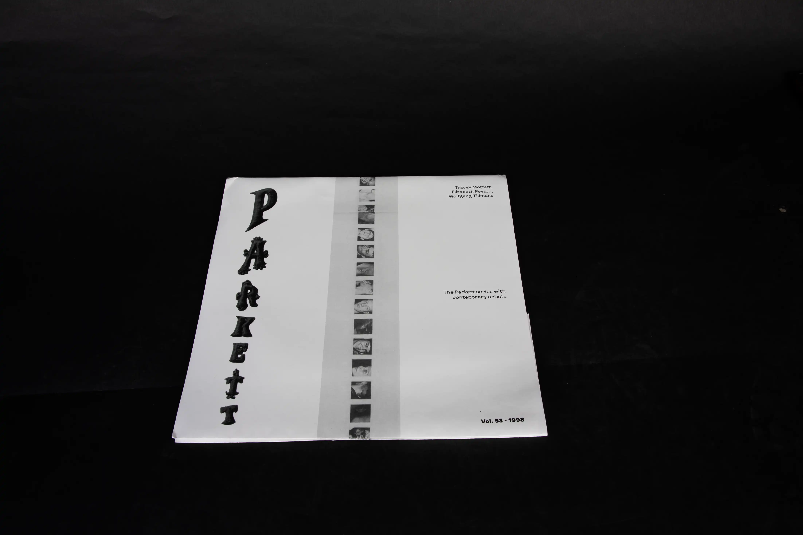
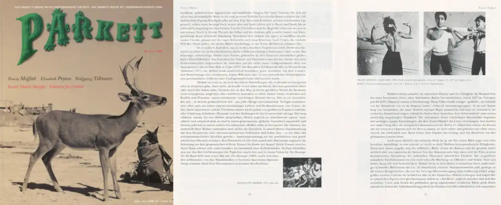

Parkett vol.53-1998
This is a redesign of the legendary magazine Parkett, specifically volume 53 from 1998. I was particularly interested in exploring the challenges of a bilingual publication: how to make it convenient and enjoyable for readers, and how to present the artwork and photographs in a way that enhances the reading experience. My solution was to create a unique reading system, where the languages are reversed in relation to each other. One half of the magazine is in English, and if the reader flips the magazine over, the other half is in German. This way, readers can easily access both languages while still appreciating the photographs and artworks that are central to the magazine’s content. The redesign pays homage to Parkett’s original spirit while experimenting with a more interactive and reader-focused format.
